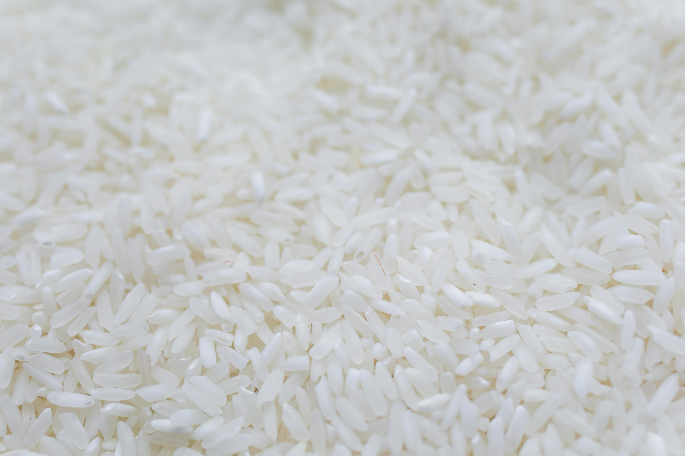

Carbohydrates are a vital source of energy for the body. They are broken
down into glucose, which is used by cells and tissues for fuel. This
energy is essential for physical activities, brain function, and overall
bodily processes. Without adequate carbohydrate intake, the body may
struggle to maintain energy levels, leading to fatigue and decreased
performance in daily tasks and exercise.
In addition to providing energy, carbohydrates play a crucial role in
maintaining digestive health. Dietary fiber, a type of carbohydrate,
aids in digestion by promoting regular bowel movements and preventing
constipation. Fiber also helps to regulate blood sugar levels and can
contribute to a feeling of fullness, which may aid in weight management.
Consuming a balanced diet with an appropriate amount of carbohydrates is
essential for overall health and well-being.

Water
rain water
tap water
stream water
lake water
river water
Water is essential for life and plays a crucial role in maintaining the
body's overall health and well-being. It is involved in numerous bodily
functions, including regulating body temperature, transporting nutrients
and oxygen to cells, and removing waste products through urine and
sweat. Proper hydration is vital for maintaining cognitive function,
physical performance, and energy levels. Without adequate water intake,
the body can become dehydrated, leading to symptoms such as fatigue,
dizziness, and confusion.
In addition to its physiological functions, water is also important for
maintaining healthy skin and supporting the digestive system. Drinking
enough water helps to keep the skin hydrated, reducing the risk of
dryness and promoting a healthy complexion. Water also aids in digestion
by helping to break down food and absorb nutrients more efficiently. It
can prevent constipation by softening stools and promoting regular bowel
movements. Overall, water is a fundamental component of a healthy diet
and is essential for maintaining optimal health and well-being.
Protein
meat
fish
eggs
milk
beans
Proteins are essential macromolecules that play a crucial role in the
growth, repair, and maintenance of body tissues. They are composed of
amino acids, which are the building blocks of muscles, skin, enzymes,
and hormones. Without adequate protein intake, the body cannot
effectively repair damaged tissues or build new ones, leading to muscle
wasting, weakened immune function, and overall poor health. Proteins
also contribute to the production of enzymes and hormones that regulate
various physiological processes, including metabolism, immune response,
and cell signaling.
In addition to their structural and regulatory functions, proteins are
vital for maintaining a healthy immune system. Antibodies, which are
proteins, help the body to identify and neutralize harmful pathogens
such as bacteria and viruses. Consuming sufficient protein is essential
for the production of these antibodies, thereby supporting the body's
ability to fight off infections and illnesses. Furthermore, proteins
play a role in maintaining fluid balance and transporting nutrients
throughout the body. A balanced diet that includes an adequate amount of
protein is essential for overall health and well-being.
Vitamins
orange
strawberry
carrot
apricot
bell pepper
Vitamins are essential micronutrients that the body needs in small
amounts to function properly. They play a crucial role in various
physiological processes, including the maintenance of healthy skin,
vision, and immune function. Vitamins are divided into two categories:
water-soluble and fat-soluble. Water-soluble vitamins, such as vitamin C
and the B vitamins, need to be consumed regularly as they are not stored
in the body. Fat-soluble vitamins, such as vitamins A, D, E, and K, are
stored in the body's fatty tissues and liver, and can be utilized when
needed.
Each vitamin has specific functions and benefits. For example, vitamin C
is important for the synthesis of collagen, which is necessary for wound
healing and maintaining the integrity of connective tissues. Vitamin A
is crucial for vision and immune function, while vitamin D helps in the
absorption of calcium, promoting bone health. A balanced diet that
includes a variety of fruits, vegetables, and other nutrient-dense foods
is essential to ensure adequate intake of all necessary vitamins,
supporting overall health and preventing deficiencies.
Fats
avocado
cheese
dark chocolate
oil
butter
Fats are an essential macronutrient that play a vital role in the body's
overall health and function. They serve as a major source of energy,
providing more than double the energy per gram compared to carbohydrates
and proteins. Fats are necessary for the absorption of fat-soluble
vitamins (A, D, E, and K), which are crucial for various bodily
functions, including vision, immune response, and blood clotting.
Additionally, fats are important for maintaining healthy skin and hair,
insulating body organs against shock, and maintaining body temperature.
Beyond their physiological roles, fats are also important for brain
health. The brain is composed of nearly 60% fat, and essential fatty
acids, such as omega-3 and omega-6, are critical for cognitive function
and mental health. These fatty acids are involved in the formation of
cell membranes and the production of signaling molecules that regulate
inflammation and other processes. Consuming a balanced diet that
includes healthy fats, such as those found in avocados, nuts, seeds, and
oily fish, can support overall health and reduce the risk of chronic
diseases, such as heart disease and type 2 diabetes. It is important to
choose unsaturated fats over saturated and trans fats to promote
cardiovascular health and maintain optimal well-being.
Fiber
whole-wheat bread
it contains more fiber than white bread
barley
it is a whole grain that contains fiber
artichokes
A vegetable that contains about 7 grams of fiber per artichoke
kidney beans
a type of beans that contains fiber
pears
a medium pears contains about 5 grams of fiber
Fiber is an essential component of a healthy diet, playing a crucial
role in maintaining digestive health and preventing various diseases.
It is a type of carbohydrate that the body cannot digest, which means
it passes through the digestive system relatively intact. This
characteristic allows fiber to add bulk to the stool, promoting
regular bowel movements and preventing constipation. Additionally,
fiber helps to regulate blood sugar levels by slowing down the
absorption of sugar, which can be particularly beneficial for
individuals with diabetes. Consuming an adequate amount of fiber can
also aid in weight management by promoting a feeling of fullness,
reducing overall calorie intake.
Beyond its digestive benefits, fiber has been linked to a reduced risk
of several chronic diseases. A high-fiber diet has been associated
with a lower risk of developing heart disease, as it can help to lower
cholesterol levels by binding to cholesterol particles and removing
them from the body. Fiber also plays a role in maintaining a healthy
gut microbiome, as it serves as a food source for beneficial bacteria
in the intestines. These bacteria produce short-chain fatty acids that
have anti-inflammatory properties and contribute to overall gut
health. Incorporating a variety of fiber-rich foods, such as fruits,
vegetables, whole grains, and legumes, into the diet is essential for
reaping these health benefits and supporting overall well-being.